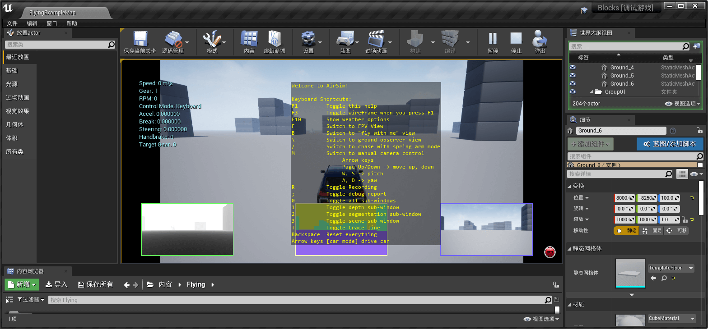

最近在学习自动驾驶相关的知识，看很多公司都是基于百度 Apollo 平台的，不过因为基于 Linux。手头电脑上只有虚拟机，显卡什么不能用，跑起来有点费劲。然后找到了微软开放的一个仿真平台 AirSim。因为微软加持，所以在 Windows平台就很方便，另外也有 Linux版本。（等买一个新硬盘再装个 Linux系统再用下 Apollo 和 AirSim ）。本文主要记录了 Windows 10 下安装 AirSim - v1.3.1的步骤。
[TOC]
¶AirSim 简介
AirSim 是一个建立在虚幻引擎之上用于仿真飞行器和汽车驾驶的仿真器（也有 Unity 的试验版本）。它是开源的、跨平台的，并支持飞行控制器(如 PX4) hardware-in-loop ，用于物理和视觉上的真实模拟。它被开发为一个 Unreal 的插件，可以简单地扔到任何 Unreal 的环境。目标是 AirSim 开发成一个人工智能研究的平台，以实验深度学习、计算机视觉和增强自主学习算法。
¶安装环境
- Windows 10
- AirSim - v1.3.1
- Visual Studio 2019
- Unreal Engine 4.25.1
¶安装步骤
提前备注下：安装之前保证磁盘可用空间足够大，因为安装 VS 以及 UE 都挺占用磁盘空间的。至少预留 50G + 吧，保险点，免得后面出现磁盘不足的尴尬。
¶安装 Visual Studio 2019
巨硬官网下载 vs_community安装包，执行在线安装，比较耗时。没办法，vs 2017 之后没有提供离线安装包了。必须安装的组件 使用C++的桌面开发 和 Windows 10 SDK 。我这里直接安装了 使用C++的桌面开发 ，和 使用C++的游戏开发 ，基本上和 C++ 相关的开发组件都有了。其他的就根据自己的需求来。我这里就安装的这几个工作负载，具体的组件都是默认选项。
¶安装 Unreal Engine
下载 安装 Epic Games Launcher。( PS：这段时间 Epic 正在免费送游戏呢，白嫖了 GTA 5 ，文明 6， 无主之地等，哈哈哈)。
安装登陆器的时候可能会注册账号之类的。
登陆器完成，接下去就安装引擎了。
首先登录。未安装 UE 的时候，在右上角是灰色的按钮。进入到
库，选择安装的 UE 版本。这里我就选择最新的引擎版本安装了4.25.1。引擎下载比较大，大概 11 G 左右（PS：相比于游戏动辄五六十 G 来说，还是比较矜持的.如果下载比较慢，可以试下挂加速器下载。没错，就是打游戏用的那个加速器。我这里用的是挂的是鹅厂的加速器（非广告）。选择 Epic 游戏加速下载，反正是被拉满速了，不过其实我也不知道有没有用，因为我没试过不挂加速器是咋样的速度）
PS：手册上建议AirSim v1.3.1 建议安装的 UE 版本 4.24，虽然 >=4.22 也可以正常工作。所以我这里建议就直接安装最新的吧。
文明打几个回合的功夫，应该就下载好了。这时候，登陆器左上角的就会出现可点击的
启动 Unreal Engine 4.25.1。引擎安装先到这。
¶构建 AirSim
先
Clone仓库吧：官方仓库地址： https://github.com/Microsoft/AirSim。1
git clone https://github.com/Microsoft/AirSim.git
咳咳，国内网络从
github拉代码都比较……慢……我这百兆电信也就……几十 kb……所以这里就用 码云 同步了一下：https://gitee.com/troxyz/airsim （同步日期：2020.6.6）。接下去就
git clone吧，基本能拉满速。我这里拉了 v1.3.1 的最新的代码，历史代码我也暂时用不到。1
git clone -b v1.3.1-windows https://gitee.com/troxyz/airsim.git --depth 1
然后就正式构建
AirSim。从
开始菜单启动Developer Command Prompt for VS 2019或者Developer Powershell for VS 2019. 一下子找不到就在开始菜单搜索下。cd切换到airsim的源码目录下.运行
build.cmd脚本- PS: 这里会下载一个库
rpclib-2.2.1.zip和一个car_assert.zip（就是一辆默认配置好的小车），打开这个脚本搜索一下能看到这两个文件都是放在github上的，所以下载慢就不奇怪了。我这里就离线下载放到仓库里去了。 - 重命名一下
rpclib.zip扔到external\rpclib.zip下 - 解压
car_assert.zip的SUV文件夹到Unreal\Plugins\AirSim\Content\VehicleAdv\
- PS: 这里会下载一个库
如果没有错误，那这里就算构建完成了
¶如何使用 AirSim
在 Unreal/Environments/Blocks 文件夹里面有个轻量级的环境。
切换到
AirSim\Unreal\Environments\Blocks运行update_from_git.bat脚本。打开生成的
.sln工程文件，项目配置为DebugGame_Editor，Win64.运行，这时候会启动 UE，点击运行按钮，可以看到小车出现，方向键即可控制小车运动。
按
F1可看到帮助提示，可以看到深度图、分割图、相机窗口